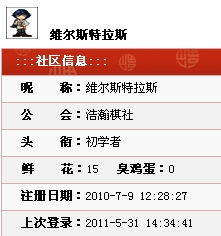

【对局结束 三国老凯 胜】维尔斯特拉斯 vs 三国老凯
首页
第三届山口论坛战
#1 【对局结束 三国老凯 胜】维尔斯特拉斯 vs 三国老凯 作者：失落刀 发表时间：2011-5-19 21:12:50
1、山口规则（ShowPost.asp?ThreadID=6224），帖子标题中id在前面的账号开局。
2、正式比赛将于20日12:00开始，提前行棋者不影响后行方时间。每步棋不超过3天时间（从对手提交棋局后开始计算，三天内必须提交应对），每局每人最多21天的时间。
3、提交棋局的方法是复制对手的棋谱代码，之后点击回帖中的 按钮，自己落子（提交棋谱时增加一个点即可）
按钮，自己落子（提交棋谱时增加一个点即可）
4、终局判断
投子认输，以回帖的形式回复“投子认输”；
超时，由网站管理员来确认此盘已经超时判负；
和棋，一方以回帖的形式发“求和”，另一方紧跟着回帖“同意和”，此盘算和，如果对方没有回复“同意和”，则此盘继续对局，且原先提和方不得再提和。
某方给出后续变化终结谱之后，对方判断无误后应主动认输，或经仲裁组判定后判定结果。
5、10手内超时一盘或20手内和棋一盘，扣罚威望1，直至扣至-1。
网友旁观可以发言，但不得发与本局无关的内容
点击查看所有对阵表
［此帖子已被 有志青年 在 2011-6-4 15:24:41 编辑过］
#2 Re:维尔斯特拉斯 vs 三国老凯 作者：维尔斯特拉斯 发表时间：2011-5-22 20:03:46
=======上图对应的爱五子棋谱代码如下，以便你拆解：========
h8i9i10
======================================================7打
#3 Re:维尔斯特拉斯 vs 三国老凯 作者：三国老凯 发表时间：2011-5-22 22:09:21
=======上图对应的爱五子棋谱代码如下，以便你拆解：========
h8i9i10h9
======================================================
#4 Re:维尔斯特拉斯 vs 三国老凯 作者：维尔斯特拉斯 发表时间：2011-5-23 15:04:23
=======上图对应的爱五子棋谱代码如下，以便你拆解：========
h8i9i10h9g9a1i8b1j8c1k9d1f8e1j7f1f10
======================================================
#5 Re:Re:维尔斯特拉斯 vs 三国老凯 作者：三国老凯 发表时间：2011-5-24 21:00:05
=======上图对应的爱五子棋谱代码如下，以便你拆解：========
h8h9i10i9f10g9
======================================================
#6 Re:维尔斯特拉斯 vs 三国老凯 作者：维尔斯特拉斯 发表时间：2011-5-25 9:14:16
=======上图对应的爱五子棋谱代码如下，以便你拆解：========
h8h9i10i9f10g9f9
======================================================
#7 Re:Re:维尔斯特拉斯 vs 三国老凯 作者：三国老凯 发表时间：2011-5-25 16:47:10
=======上图对应的爱五子棋谱代码如下，以便你拆解：========
h8h9i10i9f10g9f9f8
======================================================
#8 Re:维尔斯特拉斯 vs 三国老凯 作者：维尔斯特拉斯 发表时间：2011-5-25 17:01:52
=======上图对应的爱五子棋谱代码如下，以便你拆解：========
h8h9i10i9f10g9f9f8j9
======================================================
#9 Re:Re:维尔斯特拉斯 vs 三国老凯 作者：三国老凯 发表时间：2011-5-26 21:10:13
=======上图对应的爱五子棋谱代码如下，以便你拆解：========
h8h9i10i9f10g9f9f8j9h11
======================================================
#10 Re:维尔斯特拉斯 vs 三国老凯 作者：维尔斯特拉斯 发表时间：2011-5-27 2:19:21
=======上图对应的爱五子棋谱代码如下，以便你拆解：========
h8h9i10i9f10g9f9f8j9h11h10
======================================================
#11 Re:Re:维尔斯特拉斯 vs 三国老凯 作者：三国老凯 发表时间：2011-5-27 18:07:21
=======上图对应的爱五子棋谱代码如下，以便你拆解：========
h8h9i10i9f10g9f9f8j9h11h10g10
======================================================
#12 Re:维尔斯特拉斯 vs 三国老凯 作者：维尔斯特拉斯 发表时间：2011-5-27 20:59:52
=======上图对应的爱五子棋谱代码如下，以便你拆解：========
h8h9i10i9f10g9f9f8j9h11h10g10f11
======================================================
#13 Re:Re:维尔斯特拉斯 vs 三国老凯 作者：三国老凯 发表时间：2011-5-29 20:42:30
=======上图对应的爱五子棋谱代码如下，以便你拆解：========
h8h9i10i9f10g9f9f8j9h11h10g10f11g7
======================================================
#14 Re:维尔斯特拉斯 vs 三国老凯 作者：维尔斯特拉斯 发表时间：2011-5-31 14:27:58
=======上图对应的爱五子棋谱代码如下，以便你拆解：========
h8h9i10i9f10g9f9f8j9h11h10g10f11g7g8
======================================================
#15 Re:Re:维尔斯特拉斯 vs 三国老凯 作者：三国老凯 发表时间：2011-5-31 18:21:48
=======上图对应的爱五子棋谱代码如下，以便你拆解：========
h8h9i10i9f10g9f9f8j9h11h10g10f11g7g8h7
======================================================